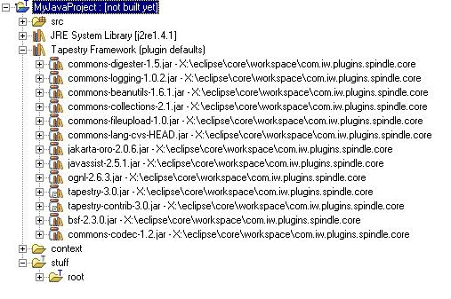

The Tapestry framework library is a convenience feature of Spindle. Basicly its a classpath container that has the Tapestry jars and all of its dependencied in it. Rather than adding each jar to the project individually, one can add the library in one step and have all the jars needed by Tapestry.
Here's what it looks like (Tapestry 3.0 final)

The contents of the library are not user configurable. They come from the version of Tapestry that ships with Spindle.
Note: The jars "tapestry-3.0.jar" and "tapestry-contrib-3.0.jar" have source code attached. The others do not but you can add source if you download it separately.
To manually add or remove the library; or to attach source code to jars in the library,see the link below.